I learned about best practices the hard way when I had to work on someone else’s workspaces. My colleague had organized the workspaces so poorly that the operation took me three times as long as it should have!
After completing this lesson, you’ll be able to:
In this lesson, you will:
If a workspace runs to completion and produces the output you want, it can’t be wrong, right? Well, yes, it can. It's not enough to assemble a functioning workspace; it's also vital to use FME efficiently and cost-effectively.
In general terms, best practice means the best way of doing something; in other words, carrying out a task effectively and efficiently.
Despite the word 'best,' we're not presuming the ideas here will meet every need and occasion. The best description of this concept I've heard – and one that fits well here – is:
A very good practice to consider in this situation, based on experience and analysis.
Best practice in FME can help a user to…
I learned about best practices the hard way when I had to work on someone else’s workspaces. My colleague had organized the workspaces so poorly that the operation took me three times as long as it should have!
In this course, we’ll provide a guide to the preferred design for workspaces. The correct style makes a workspace easier to interpret, particularly in the long run when the author might return to it after a period of inactivity.
“A good-looking, well-organized workspace gives the customer the feeling that you have done quality work.”
Style is the most apparent component of FME Best Practice. You can tell at a glance when a workspace is well-styled and when it is not. As the quote above implies, a well-designed workspace demonstrates competence.
However, style is more than looks; an adequately designed workspace provides many benefits as it is further developed and edited in the future.
Good style makes it easier to navigate and understand an existing workspace. Design is essential when workspaces might need to be edited by other users or when you intend to make edits yourself later.
Specifically, a good style can help a user to…
Do you need proof? Would you want to be given the task of editing this workspace? Can you even tell what this section does or—more importantly—why?
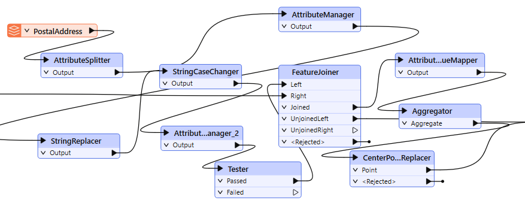
You should always use best practices, whether for a small workspace, training exercise, or large-scale project. Getting into the habit helps make your smaller projects scalable.
Positioning workspace objects and connecting them with care can make the difference between a poorly designed workspace and one that is visually attractive and efficient.
Layout methods vary from user to user. Some users like to line up objects so that all connections are horizontal:
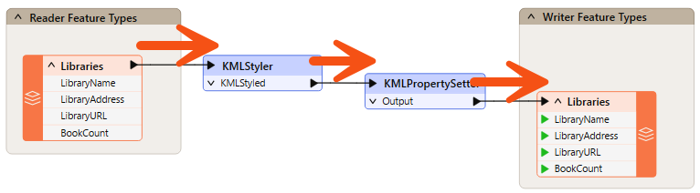
Others prefer the tops of objects to be aligned horizontally, with angled connections:
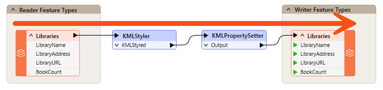
Some prefer to align object edges vertically:
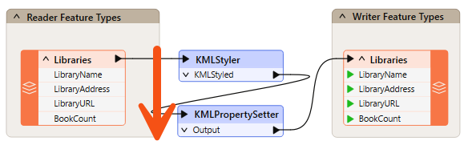
Some FME users use a mixed style, aligning the tops of sections of their workspace, but then aligning objects within these sections vertically. This style allows you to fit many transformers onto a single part of the screen, making more of the workspace visible at a glance. It counteracts the tendency for workspaces to become very long horizontally. Here's an example:
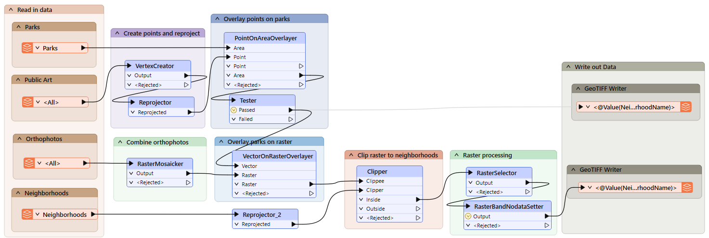
Your style is more of a personal preference than a definite rule, but consistency is essential. A workspace with no apparent layout style or an inconsistent one does not inspire confidence in the author's abilities!
Grids and Guides are tools for aligning workspace objects neatly and tidily. You can access this functionality through View > Grid and Guides on the Workbench menu bar.
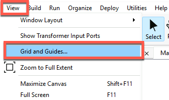
Show Grid displays a grid of lines on the Workbench canvas. Snap to Grid causes all objects, such as the KMLStyler highlighted, to snap onto the intersection of grid lines when moved. In this way, you can more easily line up objects.
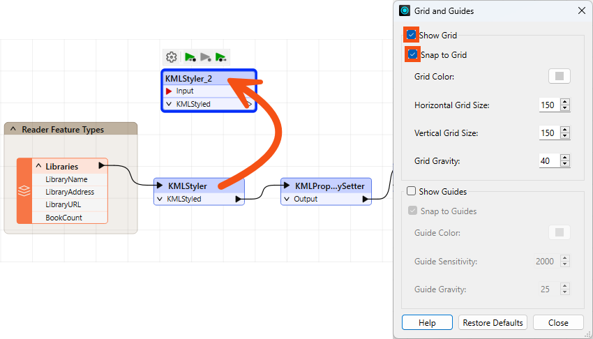
Show Guides displays guidelines on the Workbench canvas whenever an object is moved, helping you align it with other canvas objects. Snap to Guides snaps an object onto a highlighted guideline. Guides are enabled by default.
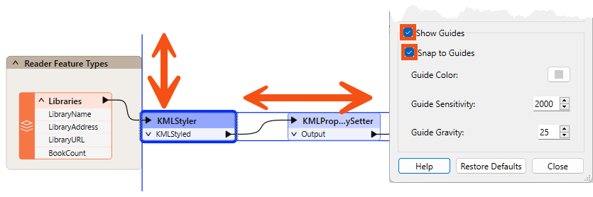
These two tools make it very simple to align workspace objects in a pleasing style.
The Auto-Organize tool is available under the Organize menu of FME Workbench:
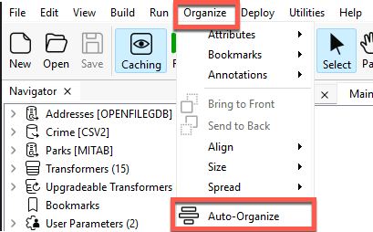
You can add the tool to your toolbar under Utilities> FME Options > Toolbar > Organize >Auto-Organize, as it's not there by default.
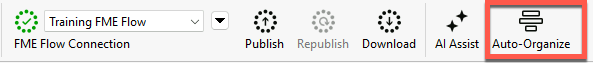
Clicking the Auto-Organize button will lay out either all of the workspace or just the objects that are currently selected:
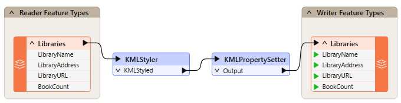
As you can see, Auto-Organize tends to use a horizontal pattern, with the tops of objects aligned. Therefore, it's better to select groups of transformers and run the tool on them rather than try to lay out the entire workspace in a single action.

Jennifer wants to improve an old workspace she built when she was an FME beginner. Her workspace reads address data, crime statistics, park locations, and noise restriction areas, then prepares the components needed to calculate a walkability score for each address in Vancouver. It doesn't calculate the final score yet. Before she extends it further, she wants to review the workspace and identify the style problems she wants to fix.
The workspace has no bookmarks or annotations to explain what each section does. Review the workspace by each section to view how it works.
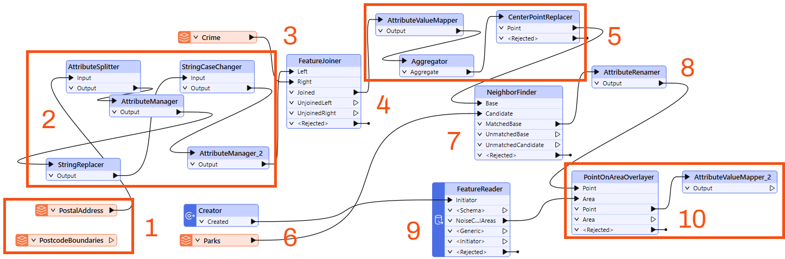
You do not need to fix any problems yet.